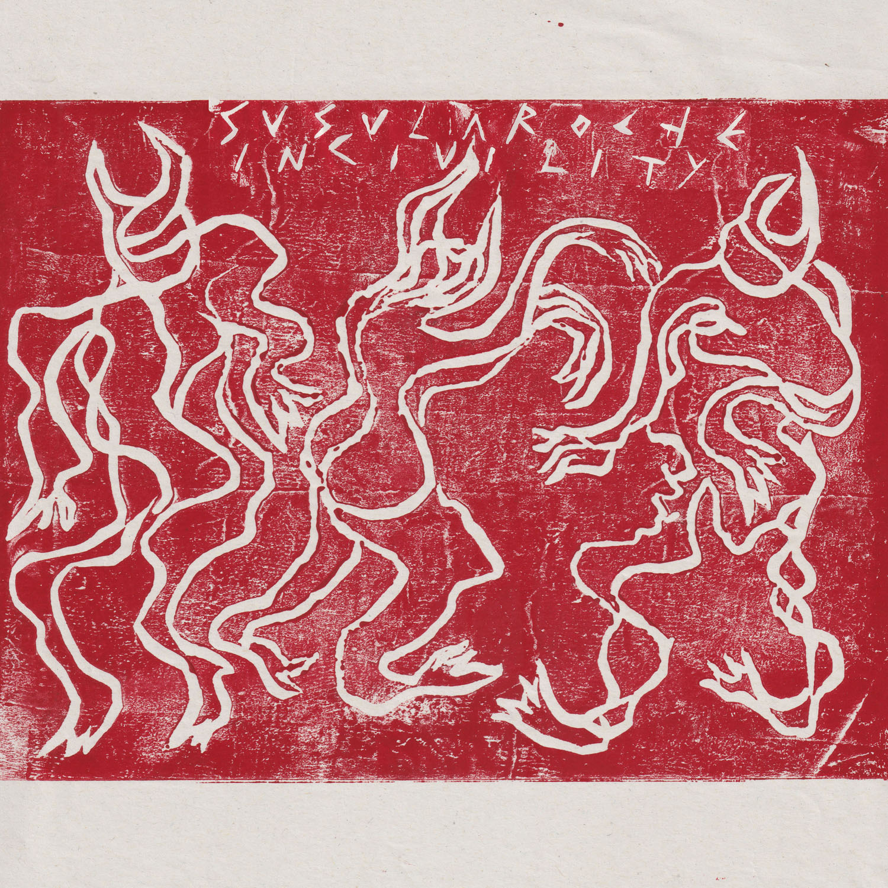

Susu Laroche - Incivility

- The third EP from London artist Susu Laroche.
- Additional Mixing and Mastered by Stan Iordanov.
Track Listing
- Oxhy + Susu Laroche - Yonder Brother (4:40)
- Incivility (5:20)
- Taba'an (4:23)
- Nar (5:14)
- Nineveh (3:14)
- Holy, Sad & Sly (4:42)
Release Date December 4, 2020
Catalog Number PV-12
Format Digital
Incivility is the third EP from London artist Susu Laroche. Characterized by its relentlessly dark sound and dabke-inspired aesthetic, the release explores the artist’s recurring interest in melodrama, ritual, and catharsis.
“Incivility channels absolute escapism -- rhythm and voice as mediums for altered states,” Laroche says. “Music to access transcendence and freedom.”
Laroche is best known as a photographer and filmmaker, but in early 2020 she began to release music, beginning with her excellent Xquisite Releases EP, A Blunt Instrument. The self-released Control Thyself followed soon after.
Much like her visual art, Laroche’s sonic work focuses heavily on shadowy mysticism and surrealist imagery. Incivility is a continuation of the distinctive songwriting style found on the artist’s previous EPs. The Oxhy-featuring technopagan anthem “Yonder Brother” sets the tone for the rest of the release, which sways between gothic meditations and ritualistic ballads.
Incivility marks the first time Laroche has sung in Arabic. The EP also finds her moving away from previous techniques such as recitation and use of source texts by incorporating made-up words and onomatopoeia to depict sacred rituals, vengeful spirits, and references to 19th century occultist Madame Blavatsky.
Laroche, who is of Egyptian and French descent, finds that “singing is a trance state in itself, each style of voice has a different identity and introducing Arabic communes with that part of my heritage.” Across Incivility’s six tracks, the artist’s vocals are set against a backdrop of murky synths, tribal percussion, and whirring noises.
A spellbinding, highly stylized showcase of Laroche’s unique brand of industrial pop, Incivility stands as yet another compelling statement from the groundbreaking multidisciplinary artist.